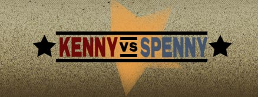
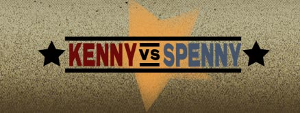

|
What is Kenny vs Spenny - Versusville?
Kenny vs Spenny - Versusville was a free downloadable PC game released some time between June 19th and July 4th 2004.
The game supported singleplayer and online multiplayer, with four main gamemodes (being 2 shooter games, a kart racing game, and a stealth game).
Versusville was considered lost media for over 15 years since the official download link went dormant in 2005.
What is Kenny vs Spenny?
Kenny vs Spenny is a Canadian reality show that depicts two best friends that compete against each other, with each episode declaring a winner, requiring the loser to suffer a humiliation.
For the most part, it can be seen for free on Kenny’s YouTube channel here.
Why was Versusville lost?
We can only speculate why it was lost in the first place. While the game was free to download, it may not have reached a very wide audience.
It's believed that the servers went down some time between April 21st 2005 and October 26th 2005, since the show Kenny vs Spenny had changed broadcasters and was no longer receiving funding from the CBC.
During this time, the Kenny vs Spenny website was migrated from cbc.ca to kennyvsspenny.tv, with all mentions of Versusville removed completely.
How was Versusville found?
Kenny vs Spenny - Versusville was finally found on November 4th, 2021 by a team of four people who had been working together on the effort since early 2021, with individual efforts beginning years prior.
While it wasn’t necessarily “lost” in the first place, it meets most definitions of being lost, as its location was unknown and it was not readily available to even hardcore fans interested in the game.
You can watch the video at the top of the page for a painstaking tour of what worked (and what didn’t work) on the journey to finding the game.
Why was Versusville found?
This is an abstract question that involves the arrow of time, impermanence, and the nature of the human psyche. Instead, in their own words:
“Johannes Kepler said: "We do not ask for what useful purpose the birds do sing, for song is their pleasure since they were created for singing." In this spirit, I won't try to justify why we spent more than a year bothering people about this game. Instead, I'll talk about how I enjoyed it.
I adore the show Kenny vs Spenny, and I've spent many, many hours documenting this in videos. I also get obsessive with the things I like, trying to absorb as much of it as possible, and picking it apart. Knowing there was a lost Kenny vs Spenny video game left a Versusville-shaped hole in my obsession, and it needed filling.
I'm also haunted (in kind of a good way) by early 2000s 3D environments: the low-poly models, the ugly textures, and the minimalism. I enjoy tracking things down, and poking around obscure internet niches. I like puzzles. I like collecting, sorting, and organizing. I like teamwork.
All of this made finding Versusville a pleasure.” -Ben
“I've been searching for KvS-related lost media since 2015, with Versusville spearheading the search.
Kenny vs Spenny means a lot to me and preserving the show that I love and the content that's come from it has always been a passion of mine.
From the extra scenes on the countless DVD releases to the most abstract of songs found in the show, I'm glad I could share my findings, and I'm super excited to say that we can finally get this game in everyone's hands!” -Carson
“i’ve always had a soft spot for oddball online experiments like worlds.com, so to find that there was a similar sort-of thing created for kenny vs spenny sent me into a figurative death spiral. i’d consider myself a diehard fan, so i figured i’d die harder doing what i could to resurrect this.
and die i did.
there were many, many times where i completely thought, "ok, this is absolutely gone forever," but i kept coming back, trying more and more routes and thinking of the possible ways that this could even still exist.
we did not see any in-game footage for the entirety of this search, and i think that allure kept me going. that, and knowing that i’d still have the memories and connections made between the four of us that i never could have dreamed of otherwise.” -jphn
SPECIAL THANKS
This is a comprehensive list of everyone who played a part in finding Versusville. Whether you know of your involvement or not, we appreciate you!
- Kenny Hotz (and Spenny)
- Mark Greenshields & The DC Studios Team
- Ira Levy & Breakthrough Entertainment
- The Library and Archives Canada
- Blackadder/blackadders2
- All companies listed below
|
|
 
